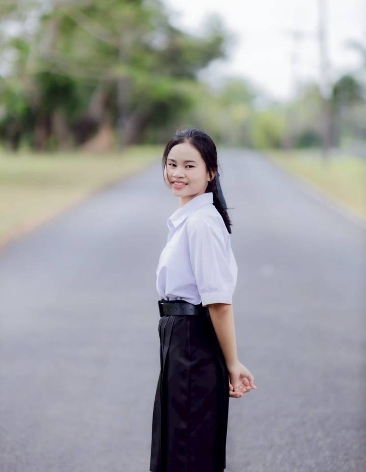

แฟ้มสะสมผลงานและเส้นทางสู่ความฝัน
MY EDUCATION • MY EXPERIENCE • MY FUTURE
ชื่อ-นามสกุล : นางสาวธมลวรรณ หิรัญรัตน์
เป้าหมาย : มุ่งมั่นศึกษาต่อในระดับอุดมศึกษา
มหาวิทยาลัย: มหาวิทยาลัยราชภัฏสุราษฎร์ธานี
คณะ: มนุษยศาสตร์และสังคมศาสตร์
สาขา: รัฐประศาสนศาสตร์
1. ฝึกประสบการณ์วิชาชีพ ณ อำเภอทุ่งใหญ่
ได้เรียนรู้เกี่ยวกับระบบการทำงานของหน่วยงานราชการ การปฏิบัติงาน และการให้บริการประชาชน ทำให้เข้าใจบทบาทหน้าที่ของบุคลากรภาครัฐมากยิ่งขึ้น
2. การแข่งขันประกวดเพลงคุณธรรม
เข้าร่วมการแข่งขันประกวดเพลงคุณธรรม กลุ่มสาระการเรียนรู้สังคมศึกษา ณ โรงเรียนเตรียมอุดมศึกษา ซึ่งเป็นประสบการณ์ที่ช่วยส่งเสริมความกล้าแสดงออกและการทำงานร่วมกับผู้อื่น
ได้รับรางวัลเหรียญทอง จากการแข่งขันประกวดเพลงคุณธรรม กลุ่มสาระการเรียนรู้สังคมศึกษา
มุ่งมั่นพัฒนาตนเองเพื่อเป็นบุคลากรภาครัฐที่ดี และมีส่วนร่วมในการพัฒนาสังคม

ชื่อ-นามสกุล : นางสาวอริสรา หิรัญรัตน์
เป้าหมาย : มุ่งมั่นศึกษาต่อในระดับอุดมศึกษา
มหาวิทยาลัย: มหาวิทยาลัยราชภัฏบ้านสมเด็จเจ้าพระยา
คณะ: ครุศาสตร์
สาขา: การศึกษาปฐมวัย
1. ฝึกประสบการณ์วิชาชีพ ณ โรงเรียนบ้านหนองใหญ่
ได้เรียนรู้เกี่ยวกับการดูแลเด็ก การสังเกตพัฒนาการ และการสร้างความสัมพันธ์กับเด็ก ทำให้เข้าใจบทบาทหน้าที่ของครูและเห็นความสำคัญของวิชาชีพครูมากยิ่งขึ้น
2. การแข่งขันประกวดเพลงคุณธรรม
เข้าร่วมการแข่งขันประกวดเพลงคุณธรรม กลุ่มสาระการเรียนรู้สังคมศึกษา ณ โรงเรียนเตรียมอุดมศึกษา เป็นประสบการณ์ที่ช่วยฝึกความกล้าแสดงออก ความสามัคคี และการทำงานเป็นทีม
ได้รับรางวัลเหรียญทอง จากการแข่งขันประกวดเพลงคุณธรรม กลุ่มสาระการเรียนรู้สังคมศึกษา
ตั้งใจเป็นครูที่ดี พร้อมส่งเสริมการเรียนรู้และพัฒนาการของเด็กให้เติบโตอย่างมีคุณภาพ